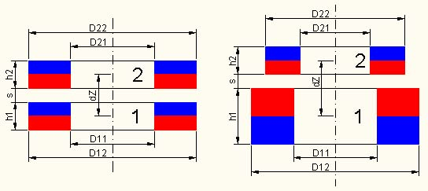
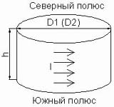
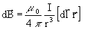
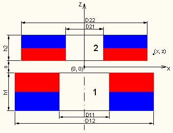
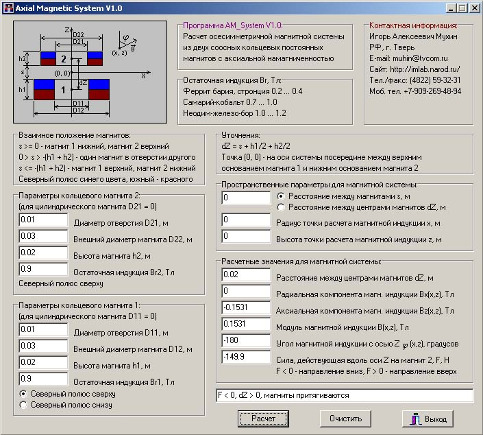

AM_System: Программа
расчета
осесимметричной магнитной системы из двух
соосных кольцевых постоянных магнитов с аксиальной намагниченностью
1. Конструкция магнитной системы из двух кольцевых магнитов
Конструкция осесимметричной магнитной системы из двух соосных кольцевых постоянных магнитов с аксиальной намагниченностью показана на рис. 1.1. Магнитная система состоит из двух соосно расположенных на некотором расстоянии друг от друга кольцевых или цилиндрических магнитов, намагниченных по оси. Направление намагниченности магнитов (вдоль оси симметрии) может быть одинаковым или противоположным друг другу.

Постоянный магнит 1 представляет собой
кольцо (или цилиндр) внешним диаметром D12 высотой h1
с отверстием диаметром D11 (или без отверстия).
Постоянный магнит 2 представляет собой кольцо (или цилиндр) внешним диаметром
D22 высотой h2 с отверстием диаметром D21 (или без
отверстия).
Взаимное положение магнитов может быть определено либо расстоянием между ними s,
либо расстоянием между их центрами dZ. Эти параметры связаны друг с другом
следующим соотношением:
dZ = s + h1/2 + h2/2
Расстояние s между магнитами – это расстояние между верхним основанием магнита 1 и нижним основанием магнита 2. Величина s может принимать как положительные, так и отрицательные значения. Когда s ≥ 0, магнит 2 является верхним, а магнит 1 – нижним. Когда 0 > s > -(h1 + h2), один из магнитов находится частично внутри отверстия другого магнита. При этом должно выполняться соотношение для их диаметров: либо D22 ≤ D11 (магнит 2 внутри магнита 1), либо D12 ≤ D21 (магнит 1 внутри магнита 2). Когда s ≤ -(h1 + h2), магнит 2 становится нижним, а магнит 1 – верхним.
Примеры осесимметричной магнитной системы из двух соосных кольцевых постоянных магнитов с аксиальной намагниченностью: калибровочная магнитная система [6], аксиальный магнитный подшипник [8], радиальный магнитный подшипник [8].
Калибровочная магнитная система – система из двух одинаковых соосно расположенных кольцевых постоянных магнитов, намагниченность каждого из которых направлена в одну и ту же сторону вдоль оси системы. В центре системы имеется область однородного магнитного поля (зона однородности) с осевым направлением магнитной индукции. Размеры зоны однородности зависят от геометрических и физических параметров системы. Система может использоваться для калибровки датчиков магнитной индукции, обеспечивая их осевой и радиальный доступ к зоне однородности.
Аксиальный магнитный подшипник – осесимметричный подшипник, противодействующий осевой нагрузке и обеспечивающий свободное вращение объекта относительно оси. Принцип его работы основан на использовании сил отталкивания между соосными кольцевыми магнитами со встречной аксиальной намагниченностью. Аксиальный магнитный подшипник имеет радиальную неустойчивость, которую необходимо компенсировать дополнительными радиальными подшипниками (немагнитными). Разновидностью аксиального магнитного подшипника является магнитная опора, которая противодействует осевой нагрузке, создаваемой весом объекта.
Радиальный магнитный подшипник – осесимметричный подшипник, противодействующий радиальной нагрузке и обеспечивающий свободное вращение объекта относительно оси. Принцип его работы основан на использовании сил притяжения между соосными кольцевыми магнитами с аксиальной намагниченностью, направленной в одну и ту же сторону. Радиальный магнитный подшипник имеет аксиальную неустойчивость, которую необходимо компенсировать дополнительными аксиальными подшипниками (немагнитными).
Задача – по заданным геометрическим и физическим параметрам магнитной системы необходимо рассчитать магнитную индукцию создаваемого системой магнитного поля и силу взаимодействия постоянных магнитов.
2. Расчет индукции магнитного поля одиночного постоянного кольцевого (цилиндрического) магнита
Цилиндрический постоянный магнит с аксиальным направлением намагниченности можно рассматривать как однослойный соленоид с бесконечно тонкой обмоткой, геометрически соответствующей боковой поверхности магнита, по которой течет намагничивающий ток I (рис. 2.1).

Условием эквивалентности магнита и соленоида является равенство их магнитных моментов. Магнитный момент магнита P может быть найден по формуле:
P = M V = M S h, где M – намагниченность магнита, V – его объем, S – площадь сечения, h – высота.
Магнитный момент эквивалентного соленоида:
P = j h S, где j = I/h – линейная плотность намагничивающего тока.
Тогда:
j = M
Для материалов с прямоугольной петлей гистерезиса (феррит бария, феррит стронция, неодим-железо-бор, самарий-кобальт и т. п.):
M ~ Br/m0, где Br – остаточная индукция, m0 = 4p ∙ 10-7 Гн/м – магнитная постоянная. Таким образом, линейную плотность намагничивающего тока можно выразить приближенной формулой:
j = Br/m0
Кольцевой постоянный магнит с аксиальным направлением намагниченности может быть представлен как два однослойных цилиндрических соленоида с бесконечно тонкой обмоткой, вложенных друг в друга. Соленоид диаметром D2 и высотой h соответствует внешней боковой поверхности магнита, а соленоид диаметром D1 и высотой h – внутренней поверхности отверстия. Намагничивающие токи в соленоидах равны по величине и противоположны по направлению.
Величину и направление вектора магнитной индукции dB в произвольной точке магнитного поля, создаваемого в вакууме (или воздухе) элементом проводника длиной dl с током I, можно найти с помощью закона Био – Савара – Лапласа [4]:

где dl – вектор элемента проводника, численно равный dl и проведенный в направлении тока, r – радиус-вектор, проведенный из этого элемента проводника в рассматриваемую точку поля, r = mod(r). Этот принцип расчета положен в основу программы A_Magnet [1]. Ее алгоритмы и формулы для расчета магнитной индукции использованы в программе AM_System.
3. Расчет магнитной индукции системы из двух кольцевых магнитов
Для расчетов систем с осевой симметрией предпочтительнее использовать систему цилиндрических координат. Центр системы координат в данном случае удобно поместить на оси магнитной системы посередине между магнитами (рис. 3.1), т. е. на расстоянии по s/2 как от верхнего основания магнита 1, так и от нижнего основания магнита 2. Необходимо помнить (см. п. 1), что величина s может принимать как положительные, так и отрицательные значения. Когда s ≥ 0, магнит 2 является верхним, а магнит 1 – нижним. Когда 0 > s > -(h1 + h2), один из магнитов находится частично внутри отверстия другого магнита. При этом должно выполняться соотношение для их диаметров: либо D22 ≤ D11 (магнит 2 внутри магнита 1), либо D12 ≤ D21 (магнит 1 внутри магнита 2). Когда s ≤ -(h1 + h2), магнит 2 становится нижним, а магнит 1 – верхним.

Так как магнитная система состоит из двух магнитов, то в соответствии с принципом суперпозиции ее магнитное поле равно сумме магнитных полей магнитов [4]. Введем следующие обозначения. Магнитная индукция магнита 1 имеет радиальную B1x (x, 0, z) и аксиальную B1z (x, 0, z) составляющие (рассчитываемые по закону Био-Савара-Лапласа относительно центра магнита 1 с остаточной индукцией Br1). Магнитная индукция магнита 2 имеет радиальную B2x (x, 0, z) и аксиальную B2z (x, 0, z) составляющие (рассчитываемые по закону Био-Савара-Лапласа относительно центра магнита 2 с остаточной индукцией Br2). Магнитная индукция B12 (x, 0, z) магнитной системы имеет радиальную B12x (x, 0, z) и аксиальную B12z (x, 0, z) составляющие, рассчитываемые относительно центра опоры с учетом того, что магниты находятся на расстоянии s друг от друга по формулам:
B12x (x, 0, z) = B1x (x, 0, z + h1/2 + s/2) + B2x (x, 0, z – h2/2 – s/2)
B12z (x, 0, z) = B1z (x, 0, z + h1/2 + s/2) + B2z (x, 0, z – h2/2 – s/2)
Модуль магнитной индукции системы B12 (x, 0, z):
4. Расчет силы взаимодействия магнитов
Для расчета силы взаимодействия (притяжения или отталкивания) магнитов предположим, что магнитное поле магнита 1 с радиальной B1x (x, 0, z) и аксиальной B1z (x, 0, z) составляющими магнитной индукции (рассчитываемыми по закону Био-Савара-Лапласа относительно центра магнита 1) действует на эквивалентные соленоиды с линейной плотностью тока j2 = +Br2/m0, заменяющие магнит 2, создавая силу Ампера (сила Ампера – сила, действующая со стороны магнитного поля на проводник с током) [4]. Элементарная сила Ампера dF, действующая на малый элемент dl длины проводника, по которому идет электрический ток I, равна:
где dl – вектор, численно равный длине dl элемента проводника и направленный в ту же сторону, что и вектор j плотности тока в этом элементе проводника.
Если векторы dl и B взаимно перпендикулярны, то направление силы dF можно найти по правилу левой руки: если ладонь левой руки расположить так, чтобы вектор магнитной индукции входил в ладонь, а четыре вытянутых пальца указывали бы направление электрического тока, то отставленный большой палец укажет направление силы, действующей со стороны поля на проводник.
Сила Ампера, возникающая за счет аксиальной компоненты магнитной индукции поля магнита, имеет только радиальную составляющую. Ее воздействие на соленоид сводится к его радиальному сжатию (растяжению). Таким образом, искомая сила определяется только радиальной компонентой B1x индукции магнитного поля постоянного магнита 1. Причем радиальная компонента индукции магнитного поля постоянного магнита 1 и вектора линейной плотности тока j2 в эквивалентной магниту 2 системе соленоидов взаимно перпендикулярны.
Линейная плотность тока в эквивалентной магниту 2 системе соленоидов:
j2 (D22/2, 0, z) = Br2/m0 для наружного соленоида диаметром D22
j2 (D21/2, 0, z) = -Br2/m0 для внутреннего соленоида диаметром D21
Тогда для элементарной силы Ампера d2F можно записать:
где (D22/2) df и (D21/2) df – элементы длины проводника обмотки в цилиндрической системе координат.
Или, с учетом осевой симметрии системы:
С учетом положения центра координат пределы интегрирования по z будут от s/2 до s/2 + h2, а радиальную составляющую магнитной индукции магнита 1 B1x, рассчитанную по формулам п. 2 относительно его центра, надо брать в точках (D22/2, 0, z + h1/2 + s/2) и (D21/2, 0, z + h1/2 + s/2), т. е. относительно центра координат магнитной опоры:
5. Программа Axial Magnetic System версия 1.0

Рис. 5.1. Внешний вид окна программы Axial Magnetic System V1.0.
Входные данные:
D21 – диаметр отверстия в постоянном
магните 2, м
D22 –
внешний диаметр постоянного магнита 2, м
h2 –
высота постоянного магнита 2, м
Br2 –
остаточная индукция материала постоянного магнита 2, Тл
Северный полюс магнита 2 находится сверху
D11 –
диаметр отверстия в постоянном магните 1, м
D12 –
внешний диаметр постоянного магнита 1, м
h1 –
высота постоянного магнита 1, м
Br1 –
остаточная индукция материала постоянного магнита 1, Тл
Положение северного полюса магнита 1 (сверху или снизу) выбирается
В зависимости от предпочтения выбирается один из двух пространственных
параметров, характеризующих взаимное положение магнитов:
Либо s – расстояние между верхним основанием магнита 1
и нижним основанием магнита 2, м (величина s может
быть как положительной, так и отрицательной)
Либо dZ – расстояние между центрами магнитов 1 и 2, м
(величина dZ может быть как положительной, так и
отрицательной)
x – радиус точки расчета магнитной индукции относительно
начала координат (0, 0), м
z – высота
точки расчета магнитной индукции относительно начала координат (0, 0), м
Программа производит проверку входных данных на физическую и математическую корректность, а также их совместимость друг с другом.
Выходные данные:
В зависимости от выбранного
пространственного параметра, характеризующего взаимное положение магнитов
рассчитывается:
Либо s – расстояние между верхним основанием магнита 1
и нижним основанием магнита 2, м
Либо dZ – расстояние между центрами магнитов 1 и 2, м
Bx(x, z)
– радиальная компонента магнитной индукции системы в точке (x, z), Тл
Bz(x, z)
– аксиальная компонента магнитной индукции системы в точке (x, z), Тл
B(x, z) – величина модуля
магнитной индукции системы в точке (x, z), Тл
f(x,
z) – угол между направлением вектора магнитной индукции и осью Z, градусов
F – сила, действующая на магнит 2 со стороны магнита
1, Н. Положительное значение силы означает, что она направлена вдоль оси
Z вверх, отрицательное – в противоположном направлении (вниз). Если центр
магнита 2 находится выше центра магнита 1 (dZ > 0), то отрицательное значение
силы (F < 0) означает, что магниты притягиваются вдоль оси Z, а положительное (F
> 0) – что отталкиваются. Если центр магнита 2 находится ниже центра магнита 1
(dZ < 0), то отрицательное значение силы (F < 0) означает, что магниты
отталкиваются вдоль оси Z, а положительное (F > 0) –
что притягиваются. Когда центры магнитов совпадают (dZ = 0), магниты вдоль оси Z
не взаимодействуют. Ненулевое значение силы в данном случае обусловлено
погрешностью расчета.
Расчеты производятся в системе СИ. Результаты выводятся на экран монитора.
После запуска программы можно вводить входные данные и производить расчет нажатием кнопки "Расчет". Входные данные (D11, D12, h1, Br1, D21, D22, h2, Br2, s, dZ, x, z) необходимо вводить, учитывая принятый в операционной системе (ОС) формат разделителя для десятичной дроби – точка или запятая, например, 0.005 или 0,005, либо установите в ОС точку в качестве разделителя. Также при вводе или при выводе может использоваться экспоненциальный формат X.XXEY, где латинская буква E обозначает основание 10, а Y – степень (например, 1.67E-8 = 1.67 ∙ 10-8 = 0.0000000167).
Для очистки окон с выходными данными следует нажать кнопку "Очистить". Для того, чтобы закрыть программу, следует нажать кнопку "Выход".
6. Демонстрационная версия программы AM_System
Версия 1.0 демо: AM_System10d.rar (~180 Кбайт)
Демонстрационная версия программы позволяет рассчитывать параметры магнитной системы только при нулевом расстоянии между магнитами (s = 0). Магнитная индукция рассчитывается только в точках, лежащих на оси симметрии системы (x = 0). Время одного расчета может составлять до нескольких секунд при использовании компьютера с процессором Pentium-I 200 МГц или аналогичным. Программа может работать с операционными системами (ОС) Windows 95, 98 и XP (с другими ОС семейства Windows не проверялась).
Файл AM_System10d.rar необходимо распаковать в заранее созданную папку. Упаковка производилась с помощью WinRAR 3.60. Результат распаковки: AM_System10d.exe - исполняемый файл программы. Для удобства запуска можно создать значок программы на рабочем столе. После запуска программы можно вводить входные данные в системе СИ и производить расчет нажатием соответствующей кнопки. Проверить правильность расчетов можно по внешнему виду окна программы, приведенному на рис. 5.1.
Скопированные файлы желательно проверить на отсутствие вирусного кода в режиме on-line [10].
По вопросу получения полной версии программы обращайтесь к автору (см. раздел Контактная информация).
Ссылки:
04.03.2013
17.11.2013
Альтернативные источники
энергии
Компьютеры и
Интернет
Магнитные поля
Механотронные системы
Перспективные
разработки
Электроника и
технология